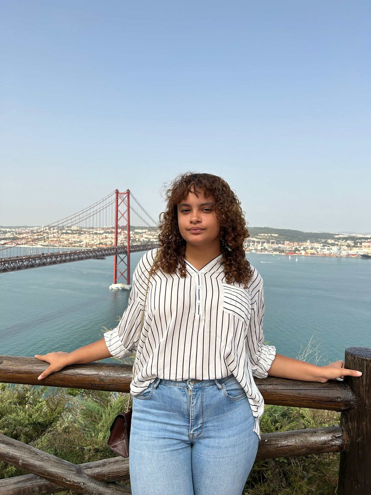
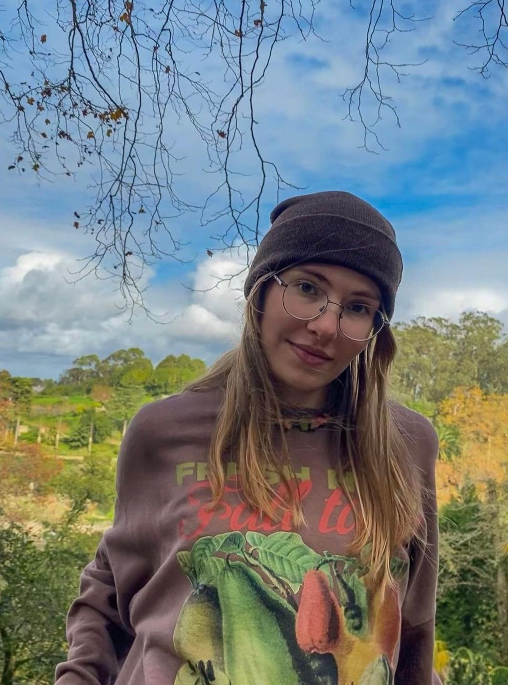
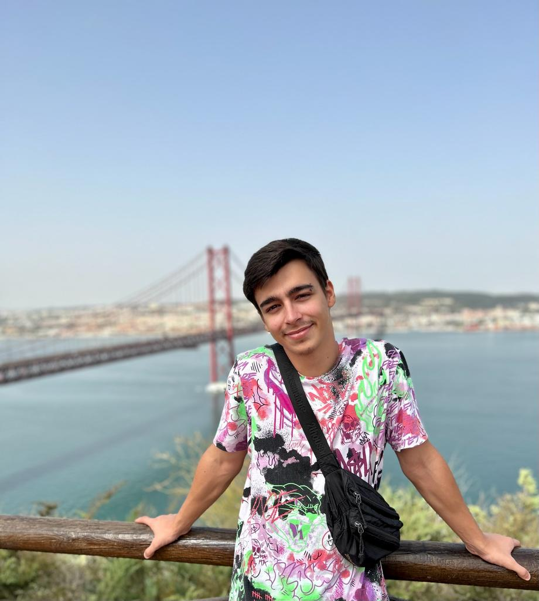

Anny Batista
Meu nome é Anny Camilly, nasci em uma pequena cidade, cercada por um ambiente tranquilo e um senso de comunidade acolhedora. Desde muito jovem, percebi que tinha uma curiosidade insaciável sobre como as coisas funcionavam, especialmente quando se tratava de substâncias químicas e seus efeitos no corpo humano. Essa fascinação me guiou em minha jornada, levando-me a descobrir e por em prática o estudo em química, no 12°, particularmente no campo das drogas. Esta é a história de como me apaixonei por essa ciência complexa e desafiadora e como ela me moldou como pessoa.
Em grupo, com as minhas colegas, trabalhamos com animação já que é uma área bastante creditada por todas do grupo.

Ana Mazzetti
Olá, eu sou a Ana, aluna do 12° ano da escola António Gedeão, desde sempre que demonstrei um forte interesse pela área da biologia, mais concretamente da medicina, assim sendo, este projeto teve uma grande proximidade de mim e concluí-o, juntamente com a Anny, com muita satisfação.

Hugo Barros
Olá, sou o Hugo, tenho 19 anos e sou o Desenvolvedor deste website.